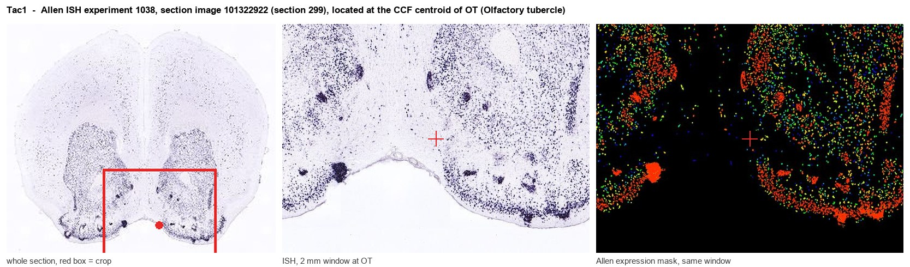
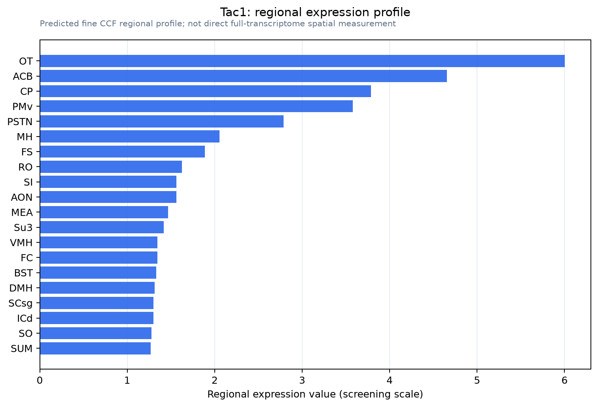

Tac1
Spatial tier: STRICT_EXCLUSIVE · Class: OTHER · Top region: OT (Olfactory tubercle) · Positive regions: 8/554
45.1Discovery Score
43.7Targetability Score
CEvidence grade C
What this means: Tac1: predicted fine-region profile is strict-exclusive, with 8 positive regions out of 554 (limit 12); direct spatial validation is required.
Function in OT: evidence, prediction, innovation
- Gene function
- Tac1 encodes preprotachykinin A, processed into substance P and neurokinin A. Substance P acts at the Gq-coupled NK1 receptor (Tacr1), raising calcium and exciting targets; it co-transmits in striatal direct-pathway neurons and nociceptive afferents.
- Region function
- The olfactory tubercle, the olfactory ventral striatum, combines olfactory bulb input with VTA dopamine to encode odour valence, reward and approach via D1/D2 spiny neurons and islands of Calleja.
- Published in this region
- expression only Furuta et al. 2002 found PPTA-immunoreactive neurons concentrated in the OT dense cell layer, largely co-expressed with preprodynorphin, while PPTB (Tac2) cells are nearly absent; Zhou et al. 2003 reported ~70% of OT neurons projecting to ventral pallidum are PPTA-positive; Ubeda-Banon et al. 2010 found substance P cells in human OT in Parkinson's disease.
- Predicted function
- Prediction: substance P is the direct-pathway co-transmitter of OT D1 neurons, released onto ventral pallidum and VTA during high-value odour cues to amplify approach. Chemogenetic activation of OT Tac1 neurons should drive odour and place preference; OT-restricted Tac1 deletion or intra-pallidal NK1R antagonism (L-733,060, aprepitant) should weaken reward-cue invigoration.
- Innovation
- ★★★☆☆ 3/5 Tac1 in the tubercle has been known for decades, but nobody has used Tac1-Cre to dissect this ventral-striatal population.
- Tools
- Tac1-Cre / Tac1-IRES2-Cre knock-in drivers, Tac1 knockout mice, NK1R antagonists L-733,060 and aprepitant, substance P and NK1R antibodies; OT is reached stereotaxically, intersected with Drd1-Cre or Drd3-Cre.
- References
Direct evidence located at the region

Allen ISH experiment 1038, section image 101322922 (section 299): the section that contains the CCF centroid of Olfactory tubercle according to the Allen image-to-atlas alignment (reference_to_image), with a 2 mm window around that point. Left: whole section, red box = window. Middle: ISH signal. Right: Allen's expression-mask view of the same window. open this image in the Allen viewer
Look it up yourself: Allen Mouse Brain ISH for Tac1Allen reference atlas: OT (structure 754)ABC Atlas MERFISH viewer(in the ABC Atlas choose dataset MERFISH-C57BL6J-638850-CCF, colour cells by gene "Tac1" or by parcellation_substructure "OT")All genes confined to OT + 3-D brain
Direct spatial evidence
MERFISH REGION LOCATOR

Regional expression figure

Predicted WMB × fine-CCF profile; not direct full-transcriptome spatial measurement.
Spatial profile
Evidence and specificity
- Evidence status
- PREDICTED_FINE
- Direct sources
- None; predicted localization only
- Exclusive threshold
- 12 positive regions out of 554
- Spatial specificity
- 0.342
- Top-region fraction
- 0.091
- Filter status
- PASS
Interpretation limits
- Cell-type-to-region projection is imputed expression, not direct spatial measurement.
- Adult reference atlases do not establish stability across age, sex, strain, state, or disease.
- Transcript abundance does not guarantee protein abundance or genetic-tool performance.